An introductory workshop by Ethan Danahy and Bill Church.
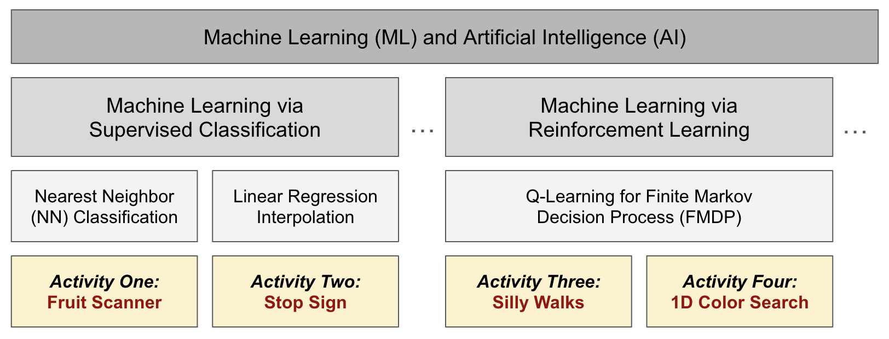
Quick Links:
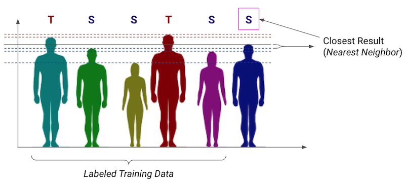
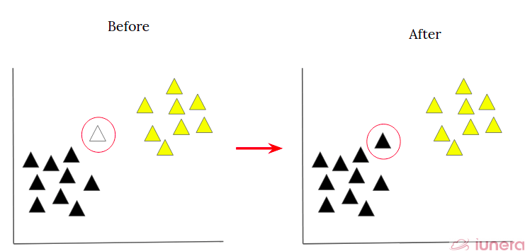
Fruit Scanner Challenge:
Build a Fruit Scanner with a Color Sensor detector, Force Sensor trigger, and Motor color indicator. Train it to detect apples and bananas.
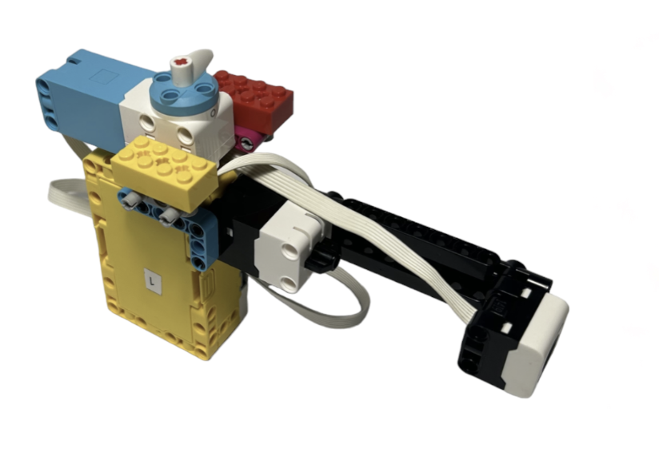
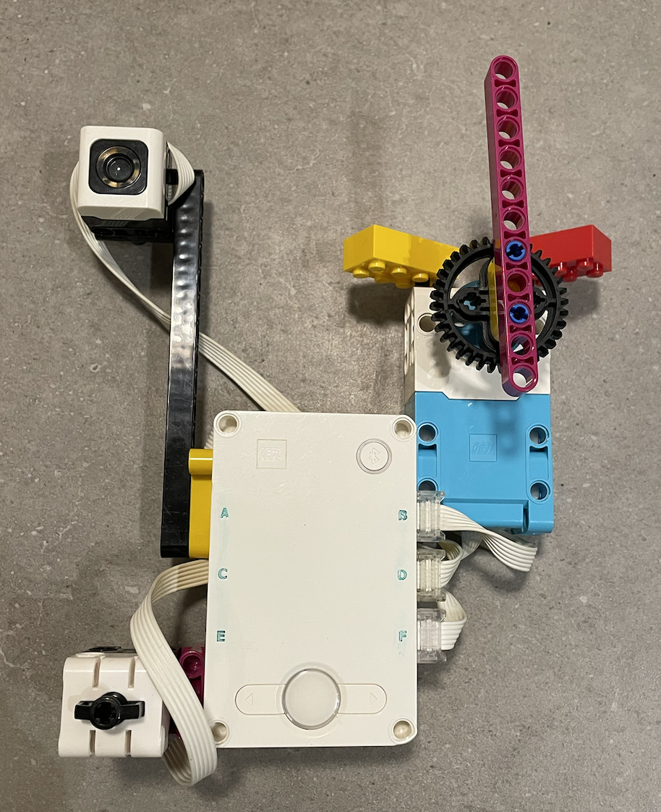
Stop at the Stop Sign:
Build a car and train it to stop at the stop sign. Use linear regression to gradually slow down to a nice stop.
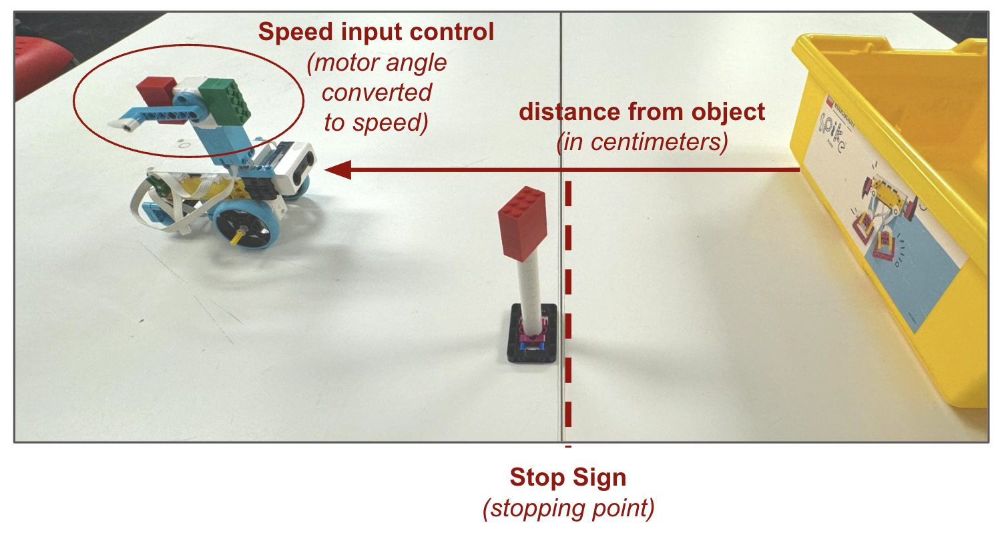
Instructions:
Use the speed throttle to input different speeds based on distance. Train the car to go fast when far away and to stop when at the stop sign.
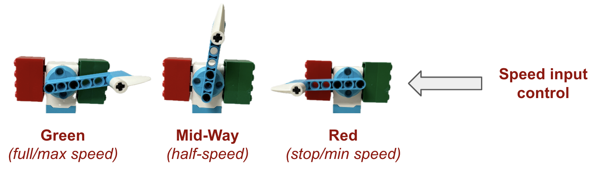
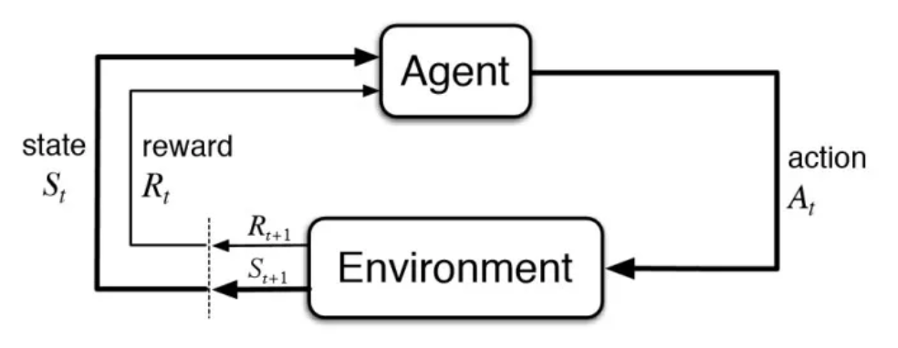
Turn Silly Walks into a Smart Walker:
Use reinforcement learning to teach a Silly Walks robot to walk straight.
| 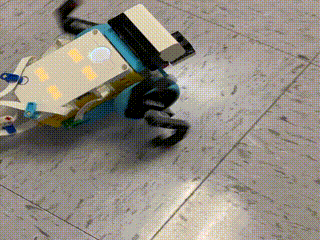 |  |
 |
Silly Walk robots end up going in any/all directions! Using the Q-Learning Reinforcement Learning algorithm we can train a walker-robot to auto-correct and head straight.

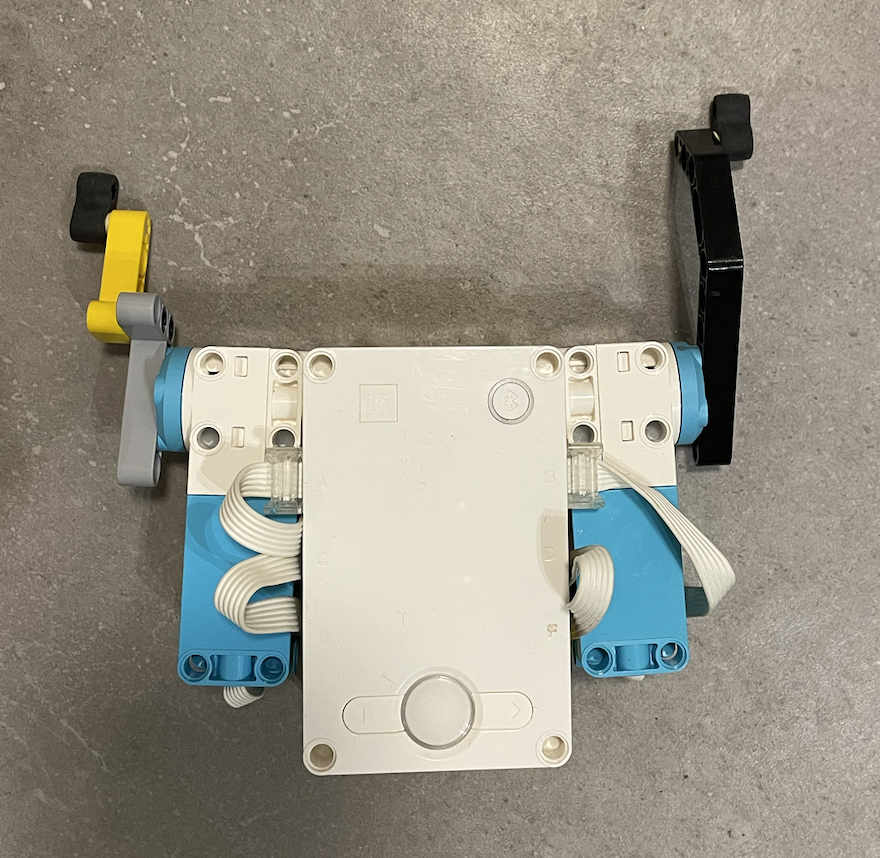
Search Out a Color:
Use reinforcement learning to have a robot search out a color.
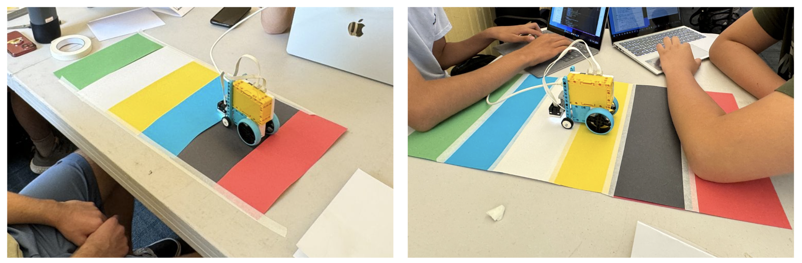
Workshop designed and developed by:

Content is Copyright 2024 by Ethan Danahy
LEGO®, the LEGO® logo, the Brick, SPIKE™, and the Minifigure are trademarks of ©The LEGO® Group.
All other trademarks and copyrights are the property of their respective owners. All rights reserved.
This workshop and content isn’t affiliated, authorized, or endorsed by The LEGO Group.